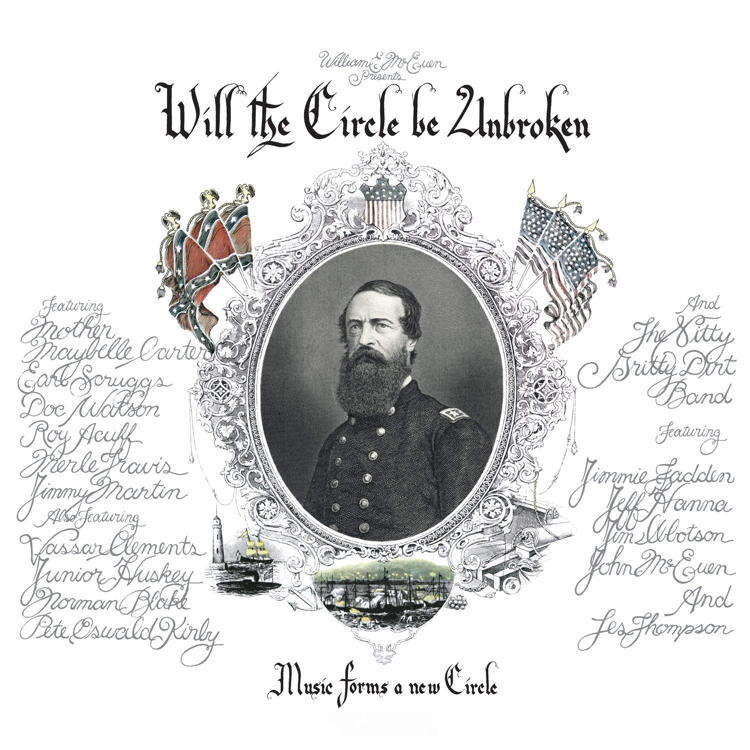

The Society for Practical Utopians
Working together to shape a brighter future for humanity
Will the Circle be Unbroken
By Herb Bowie
2018 Aug 15
tags: humanism, parenthood, religion

I first heard this song as the title track on the monumental 1972 album by the Nitty Gritty Dirt Band, which they recorded with a number of country music greats who were still alive at the time.
This song is usually recorded under the title of “Will the Circle be Unbroken,” but it’s also known by the name “Can the Circle be Unbroken.” The song was the result of a reworking by A.P. Carter of the hymn “Will the Circle be Unbroken?.” The song was first released in 1935, on a single by the Carter Family.
There are a number of wonderful recordings of this song that I can recommend. I’ll list them in chronological sequence.
- The Nitty Gritty Dirt Band, from their 1972 album Will the Circle be Unbroken
- The Country Gentlemen, from their 1988 album Folk Songs and Bluegrass
- Tim O’Brien and Darrell Scott, from their 2012 album We’re Usually A Lot Better Than This, as the second half of a medley starting with “When There’s No One Around”
All three albums, by the way, are worth repeated listening in their entirety.
It’s certainly fair to categorize this song as a religious one, and more particularly as a Christian one, and yet, even though I consider myself to be a non-believer, my lack of faith doesn’t diminish my appreciation for this song in the slightest: if anything, I think it increases it. For unlike many songs that we could put in this category, this song does not seek to proselytize, or ask us to accept any particular religious teaching.
Let’s see how it does work, and consider what it is doing.
I was standing by my window,
On one cold and cloudy day,
When I saw the hearse come rolling,
For to carry my mother away.
Note how this first verse paints a simple but altogether complete dramatic scene for us. We can see the singer, and the sight that s/he is viewing. Just four simple lines, twenty-five of the simplest words in the English language, and yet it is hard to hear them without feeling a wave of desolate bereavement.
I’d like to save consideration of the song’s chorus until the end, so let’s proceed straight to the second verse.
Well, I told that undertaker,
Undertaker, please drive slow.
For this body you are hauling,
Lord, I hate to see her go.
Again, it is a very simple scene, described using common, everyday words. And so far we have heard no suggestion of religious belief. In fact, instead of painting a picture of some sort of spiritual afterlife, we are being given very graphic, physical images of corporeal death. Note especially the use of the word “hauling” in this respect. There’s no attempt to gussy up what is happening here: it is a physical person, performing a job, driving a vehicle, hauling a load, and ultimately taking that load under the ground.
Oh, I followed close behind her,
Tried to hold up and be brave.
But I could not hide my sorrow,
When they laid her in the grave.
Again, the story continues in a very simple, linear, physical fashion.
I went back home, my home was lonesome,
Missed my mother, she was gone.
All of my brothers, sisters crying:
What a home so sad and lone.
And now, in the last verse, we have the completion of this little tale. And in the spare telling we have more than a suggestion of the sparseness of the lives of these characters. There is no mention of flowers, no mention of a church, no word of a supportive group of family and friends in attendance, no meal, no food, no mention of any speeches eulogizing the lost loved one. In short, there are none of the usual conventions that we employ to soften the blow of death, nothing to gloss over this naked experience of loss that the song has just shared with us. Instead, we just have these very simple brush strokes.
Part of the genius of the song is that there are enough details here to place us fully in the story as it unfolds, to let us see and feel at one with the singer, yet there are no details that limit the universality of the tale. In fact, I listened to this song on the day that my own mother was buried in a country churchyard a few years ago, and there was nothing in that moment to separate the singer’s grief from my own.
So now, finally, let us consider the chorus of the song.
Will the circle be unbroken,
by and by, Lord, by and by?
(Please tell me) there’s a better home a-waiting
in the sky, Lord, in the sky.
(At the beginning of the third line I’ve inserted words sung by O’Brien and Scott in their rendition, because those words seem to provide a better fit for these last two lines in the greater context of the song as a whole.)
And so here, in this moment of loss, the singer asks if what has been broken, what has been lost on this day, may someday be restored, and once again be made whole? And who hasn’t felt this same longing? No matter what your religious orientation, no matter what your once or future beliefs, who can lose a beloved family member, a parent in particular, without feeling that something once whole has been broken, and without feeling a great yearning to have that family restored and made whole again?
This is not a song of religious dogma, it is a song that speaks to a wellspring of religious feeling, to a tragic knowledge of time and what it brings to all of us, and yet an inescapable human desire to transcend death in some way, to feel a part of something larger that will live on after death. This feeling is part of what it means to be human, to know that our parents meant so much to us, to know how much they passed on to us in terms of their knowledge and beliefs and feelings and love, and with that bequest also passed on an obligation for us to keep these gifts alive.
This is perhaps why the name of this song is so moving as the title for the Nitty Gritty Dirt Band album from 1972, because the recording of that album was itself an attempt to acknowledge the great gifts bequeathed to a younger generation by their elders, and to document those gifts in a way that could be in turn passed on to others.
So while this song comes from a Christian tradition, for me it is also a song of humanism, because it so vividly describes an important dimension of what being human means for all of us.
Tags
 Content at Practopians.org is Copyright © 2009 - 2018 by Herb Bowie except where otherwise noted
Content at Practopians.org is Copyright © 2009 - 2018 by Herb Bowie except where otherwise noted